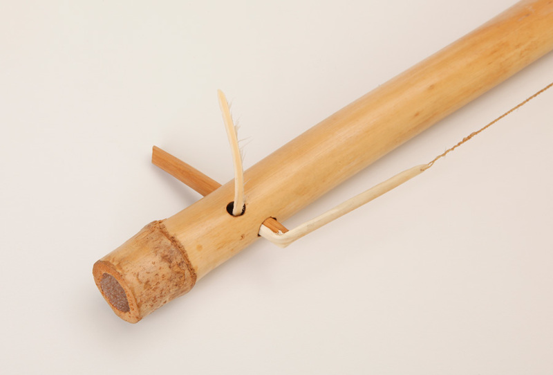

Koriana (accordion)
The history of Sotho koriana (accordion) music can be traced back to the 1920s, it originated in the slum yards of Johannesburg. Most Basotho identify this music as traditional, because it uses the Sotho language spoken mainly in Lesotho and in parts of South Africa.
Lesiba

The lesiba is regarded as Lesotho’s national musical instrument. Also known as the ‘herd boy’s gramophone’, this unique instrument is officially classed as a ‘stringed-wind’ instrument.
Thomo
The uhadi, a musical bow, is a traditional Southern African Xhosa musical instrument. It is a large unembraced musical bow which is attached to a resonator and played by percussion. The length of the string bow ranges from 115 to 130 centimeters. Similar musical bows in Southern Africa include the ‘’thomo’’ in Sotho music and the ‘’ugubhu’’ in Zulu music.
Mamokhorong
This bowed monochord instrument, sometimes referred to as a 'single-string violin', is usually constructed from a five-litre tin can resonator. A stalk, or long piece of wood, is inserted into the tin can, and a wire is strung between the end of the stalk and the base of the can.
Moropa
The drum is made out of clay and animal skin (leather). It is shaped like a pot with a spout and the bottom is hollow. The base and the body of the clay drum is covered with animal hide. Moropa is a drum that is played during girls’ initiation rites; and is played by initiated women.
Setolotolo
Three-piece construction comprised of cylindrical center section of wood (length 520 mm) with hole in each end for insertion of smaller, slightly arched pieces of wood (lengths 200 and 228 mm). Strung with copper wire, bound to middle of center section and tied to end sections with gut (?). One end of center section bound with several wrappings of twined plant fiber with loop for hanging.
Lekolulo
Lekolulo is a kind of flute played by herding boys.